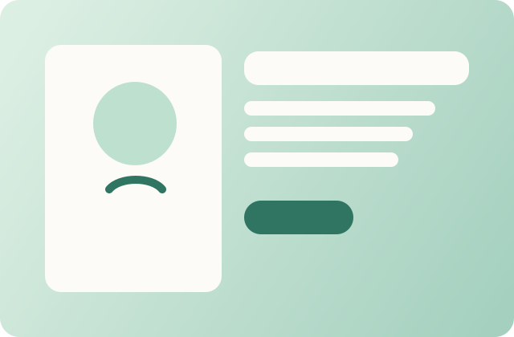
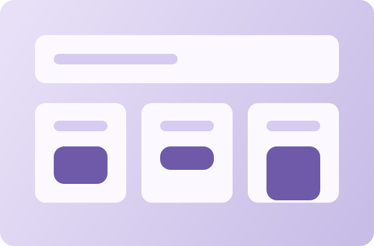

Strength
Front-End Craft
Clean layout systems, consistent spacing, accessible forms, and polished interaction feedback.
Software Engineering Portfolio
I am Zainab Almusailem, a software engineering student building clean, responsive interfaces that balance usability, structure, and personality.
Welcome!

Current Focus
This final portfolio combines semantic HTML, responsive CSS, JavaScript interactivity, API usage, and user-friendly validation in a single presentation-ready site.
About Me
I enjoy translating requirements into interfaces that are easy to read, responsive on different screen sizes, and structured with maintainable code. My focus in this project was to build a site that presents both my technical growth and my design judgment.
Instead of treating this as a simple checklist, I used the final assignment to shape a portfolio I can continue improving after the course.
Strength
Clean layout systems, consistent spacing, accessible forms, and polished interaction feedback.
Approach
I prefer solutions that are readable, dependable, and realistic to maintain over time.
Signature
My goal is to make even small interactions feel intentional instead of accidental.
Portfolio Highlights
Each section adapts to mobile, tablet, and desktop layouts without losing clarity or hierarchy.
Theme preference and visitor name are saved locally so the experience feels personal on repeat visits.
The portfolio shows clear fallback messages when API requests fail or form data is incomplete.
Dynamic greeting, live weather, filterable project gallery, and a polished visual system add personality without clutter.
Interactive Dashboard
These small tools show how the interface responds to real input, stored state, time, and external data.
Add your name to personalize this portfolio.
You have been exploring for 0s.
A simple but useful stateful interaction that updates every second.
Loading current weather...
Checking schedule...
Availability is estimated from the current time for demonstration.
Selected Work
Browse project concepts by category, level, search term, or sort order.
Project gallery summary
Use the controls below to explore projects by focus and complexity.

A service reporting concept that helps students submit campus issues, follow updates, and understand request status at a glance.

A lightweight planning dashboard focused on weekly priorities, deadlines, and a calm academic workflow.

A concept platform that connects students with community events through interest-based recommendations and simple sign-up flows.

A dashboard concept for mentoring sessions, action items, and progress visibility between students and mentors.
Workflow
The site is organized around readable structure, reusable styling, and focused client-side logic.
01
Sections, headings, forms, and navigation are organized for clarity and accessibility from the start.
02
Color variables, spacing rules, card styles, and responsive grids make the interface consistent and easy to extend.
03
Local storage, API fetch logic, filters, live validation, and helpful feedback messages create a more complete user experience.
Core skills
Quality goals
Contact
This form demonstrates validation, feedback states, and accessible error messaging. It can also serve as the starting point for a future backend-connected contact workflow.